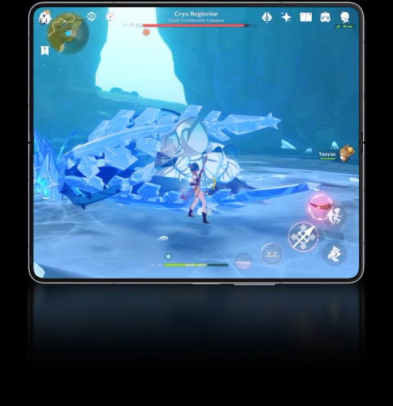

PC-like power. Now in your pocket.
Dive into the big, photo-real 3K (2880x1800) resolution display on Galaxy Book3 Ultra. The vibrant 16-inch screen offers a vast, ultra-level viewing and creating experience, made even smoother with 120Hz. Stay productive as long as you like thanks to reduced blue light emission for extra eye care. 2,3,4
Clearly brilliant
Hustle. Grind. Create. Unwind
Step up your game and speed up your work with blazing-fast speeds and smooth performance. Your workloads and games are no match for the latest 13th Gen Intel® Core™ processor.5
With an expanded touch pad and wide range of built-in ports, get the plugs and versatility you've been searching for — HDMI, USB-A, microSD slot and even two Thunderbolt 4 ports for blazing-fast 40 Gbps file transfers. No dongle needed.Studio Mode has entered the video chat Studio Mode gets you camera-ready with smart features — from enhanced AI Noise Cancelling, to Auto Framing and background effects. Combined with the wide-angle camera and studio-quality mics,
it ensures you look and sound your best on every video call
Discover the
Galaxy Books bringing inspiration to you anywhere
Get your popcorn ready — the quad-speaker system on Galaxy
Book3 Pro 360 features four immersive speakers, AKG and
Dolby Atmos technology to ensure a crystal-clear
experience from opening scene to post-credits.
Save time in Word with new buttons that show up where you need them. To change the way a picture fits in your document, click it and a button for layout options appears next to it. When you work on a table, click where you want to add a row or a column, and then click the plus sign. Reading is easier, too, in the new Reading view. You can collapse parts of the document and focus on the text you want. If you need to stop reading before you reach the end, Word remembers where you left off - even on another device.
*All specifications and descriptions provided herein may be different from the actual specifications and descriptions for the product. Samsung reserves the right to make changes to this document and the product described herein, at anytime, without obligation on Samsung to provide notification of such change. All functionality, features, specifications, GUI and other product information provided in this document including, but not limited to, the benefits, design, pricing, components, performance, availability and capabilities of the product are subject to change without notice or obligation. The contents within the screen are simulated images and are for demonstration purposes only. Measured diagonally, Galaxy Z Fold5’s size is 7.6" in the full rectangle and 7.4" accounting for the rounded corners; actual viewable area is less due to the rounded corners. Based on Samsung internal lab test conditions with pre-release version of given model connected to earphone via Bluetooth under default settings over LTE. Estimated against battery capacity and measured current over battery power consumption during video playback (video file resolution 720p, saved on device) and audio playback (mp3 file, 192kbps, saved on device with LCD display turned off), respectively. Actual video and audio playback times vary by network connection, settings, file format, screen brightness, battery condition and many other factors. Measured diagonally, Galaxy Z Fold5's Cover Screen size is 6.2" in the full rectangle and 6.1" accounting for the rounded corners; actual viewable area is smaller due to the rounded corners and camera hole. Thickness measured from the top glass panel to the bottom glass panel. Compared to previous Galaxy Z Fold models. Availability of color may vary by country, region or carrier. The Dynamic AMOLED 2X display on Galaxy Z Fold5 received a certification from VDE Germany for 100 percent Mobile Color Volume in the DCI-P3 color range, which means your images aren’t washed out and you’ll get unbelievably vivid colors regardless of differing levels of brightness. The display can achieve peak brightness of up to 1750 nits, improving the contrast between dark and light aspects of digital content for a more brilliant picture quality, with a 3,000,000:1 contrast ratio to make your mobile experience more immersive. Actual battery life varies by network environment, features and apps used, frequency of calls and messages, the number of times charged, and many other factors. Estimated against the average usage profile compiled by UX Connect Research. Independently assessed by UX Connect research between 2023.06.19-2023.06.29 in US with pre-release versions of SM-F946 and SM-F731 under default setting using LTE and 5G Sub6 networks. Typical value tested under third-party laboratory condition. Typical value is the estimated average value considering the deviation in battery capacity among the battery samples tested under IEC 61960 standard. Rated capacity is 4270mAh for Galaxy Z Fold5, and 3591mAh for Galaxy Z Flip5. Actual battery life may vary depending on network environment, usage patterns and other factors. Snapdragon is a product of Qualcomm Technologies, Inc. and/or its subsidiaries. Snapdragon is a trademark or registered trademark of Qualcomm Incorporated. Certain applications may not support Multi Window or App Pair. Taskbar feature supported on the Main Screen only. S Pen Fold Edition for Galaxy Z Fold5 sold separately. Use an S Pen that is designed for Galaxy Z Fold. All other S Pens or stylus pens may damage the screen. Galaxy Z Fold5 does not have a built-in slot for the S Pen. S Pen support is limited to the Main Screen. S Pen Fold Edition and Slim S Pen Case (S Pen Fold Edition included) sold separately. Model and color availability may vary by country. S Pen Fold Edition is only compatible with Galaxy Z Fold 5, Galaxy Z Fold4 and Galaxy Z Fold3. 30x Space Zoom includes 3x optical zoom and 30x digital zoom with AI Super Resolution technology. Zooming in past 3x may cause some image deterioration. Dual Preview supported on the native Camera app on devices running One UI 2.1 and above. Expert RAW must be downloaded separately from the Galaxy Store, for free, before use. Supported on S23 series devices, S22 series devices, S21 Ultra, S20 Ultra, Note20 Ultra, Z Fold5, Z Fold4, Z Fold3 and Z Fold2. Frame does not include volume and side keys or SIM tray. Based on lab test conditions for submersion in up to 1.5 meters of freshwater for up to 30 minutes. Not advised for beach or pool use. Water resistance of device is not permanent and may diminish over time because of normal wear and tear. IPX8 rating is not dust-resistant. Samsung Care+ coverage may vary by country and deductibles may apply. Multi control is available only on select Galaxy smartphones with One UI 5.1 or above, Galaxy Tab devices with One UI 5.1.1 or above and Galaxy Book devices launched in 2021 or later with either Samsung Settings v1.5 (Intel) or Samsung Settings v3.3 (ARM). Some function availability may vary by device model. Some Multi control actions may be unavailable in certain apps. Samsung account login required. Wi-Fi and Bluetooth connection required. Galaxy Z Flip5: 15 device components that feature a minimum of 10% post-consumer recycled material plastic or pre-consumer recycled aluminum, or Corning® Gorilla® Glass Victus® 2 with an average of 22% pre-consumer recycled content. These components include Volume Key Bracket, Speaker Module (Upper & Lower), Rear Top, Display Connector Cap, FPCB RF Cable Bracket, Rear Mid, Case Front (Main), Case Front (Sub), Volume Key, Finger Key Bracket, Receiver Deco, Connector to Connector Holder, SIM Tray, Sub Window, Back Glass. (Galaxy Z Flip4: 6 device components). Galaxy Z Fold5: 15 device components that feature a minimum of 10% post-consumer recycled material plastic or pre-consumer recycled aluminum, or Corning® Gorilla® Glass Victus® 2 with an average of 22% pre-consumer recycled glass. These components include Volume Key FPCB Bracket, Top Speaker Module (Upper & Lower), Bottom Speaker Module (Upper & Lower), Cover Display Connector, Case Front (Main), Case Front (Sub), Antenna (Sub), Antenna (Main), Volume Key, Finger Key Bracket, SIM Tray, Connector to Connector Holder, Camera Deco (Top & Bottom), Sub Window, Back Glass. (Galaxy Z Fold4: 6 device components). The above measurements are based on weight. Types of recycled materials include post-consumer recycled PA sourced from discarded fishing nets, post-consumer recycled PBT sourced from discarded PET bottles, post-consumer recycled PC sourced from water barrels and pre-consumer recycled aluminum sourced from discarded scrap material generated as a by-product during manufacturing. The scrap metal is re-melted, filtered for impurities and then recycled to make parts within Samsung’s manufacturing process. There is also pre-consumer recycled content sourced from discarded glass waste generated as a byproduct of glass manufacturing. This glass waste is crushed into cullet and then used as a component in the Corning® Gorilla® Glass Victus® 2 manufacturing process. Wired transfers require at least Android™ 4.3. If you do not have the required USB cable/connector for a wired transfer to Galaxy, you can also use wireless transfer options. iOS 5 or older Android OS must use wireless transfer options. Open Smart Switch Mobile in “Settings” on your new Galaxy phone or download Smart Switch Mobile app from Galaxy Store. Data and content available for transfer may vary by OS. The data of the Galaxy device is backed up and restored to the storage device. Use PC backup through Smart Switch PC or SD card backup function of Smart Switch Mobile. Storage options and availability may vary by country or region. Actual storage availability may vary depending on pre-installed software. Six month trial of Microsoft 365 Basic available for consumers with OneDrive-Gallery Sync capable Samsung phones (phones on the Verizon network in the U.S. not eligible). After the 6 month trial, your subscription will automatically renew into a monthly paid subscription at the current price, subject to Google Play’s terms and conditions. Cancel any time to stop future charges. Offer not available to existing Microsoft 365 or OneDrive premium subscribers (including trials), customers who previously redeemed an Office, OneDrive or other Microsoft storage bonus or free trial offer, customers with a locked OneDrive account, or former Microsoft 365 or OneDrive/Microsoft Storage premium subscribers who cancelled in the last 90 days. One offer per customer and per device. Offer cannot be transferred or combined with other Microsoft offers, and is available between March 15, 2023 and December 31, 2023. Offer must be redeemed during this period on the Google Play Store and participants must sync their gallery with OneDrive to commence the 6 month trial. Offer requires a Samsung and Microsoft account. Refer to https://www.microsoft.com/onedrive-samsung-offer for details. AP performance improvements shown compared to Galaxy Z Fold4. Actual performance will depend on user environment, conditions and pre-installed software and applications. Air Command feature availability may vary by model or app.